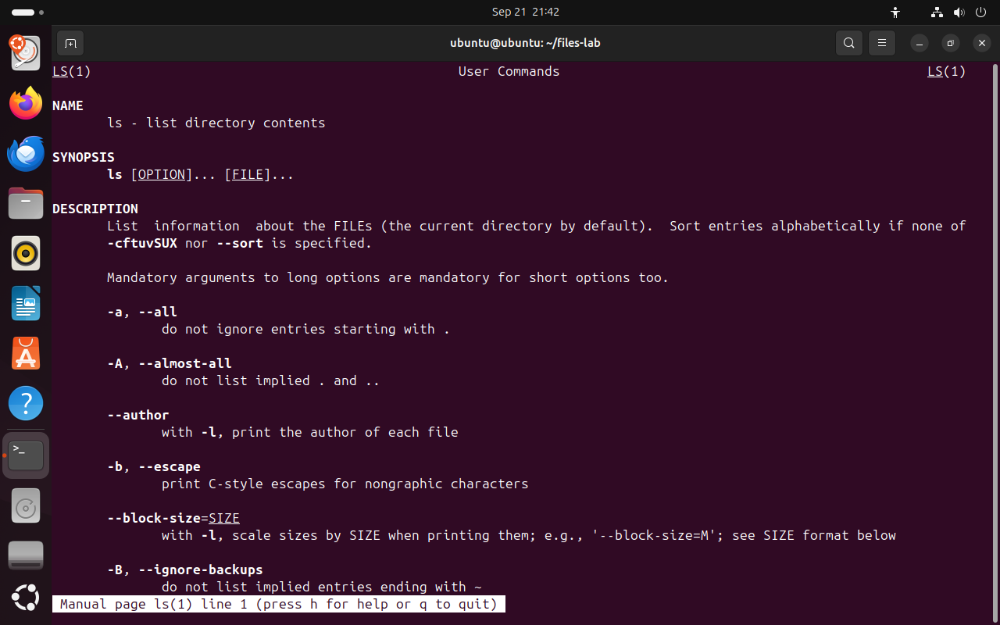
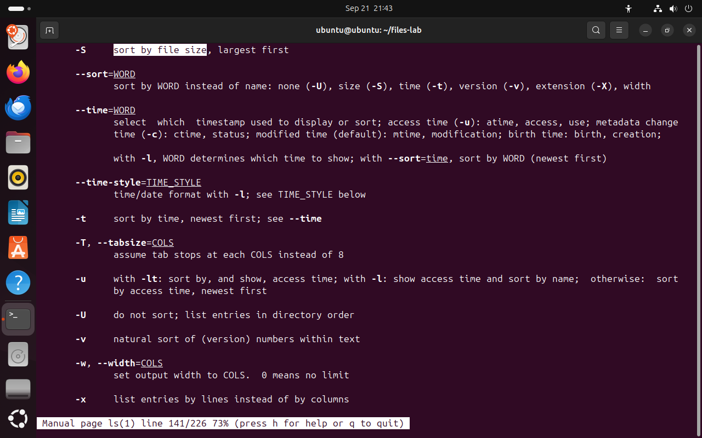
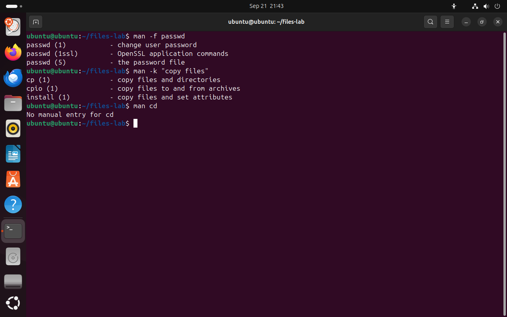
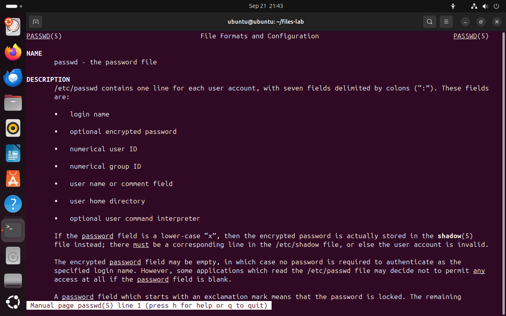
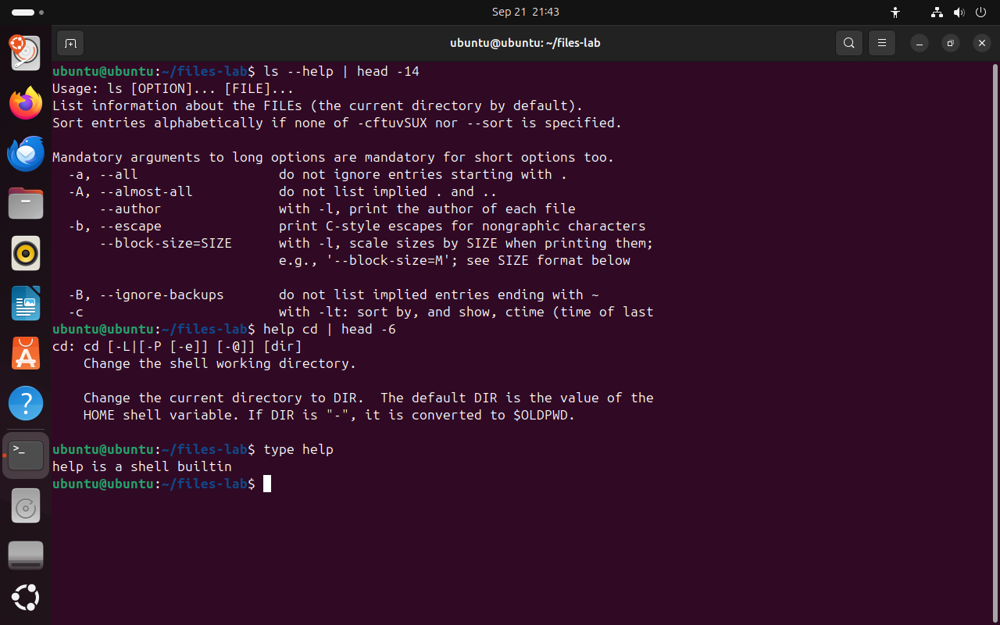

Часть 6 из 7
Справочная система
В этой части разберём встроенную справку Linux: страницы man и их разделы, поиск по странице, краткую справку --help и справку по встроенным командам оболочки.
6.1 Страница справки: man
Запоминать все ключи всех команд не нужно. В Linux описание каждой программы устанавливается вместе с ней и открывается командой man (manual — «руководство»). Справка работает без интернета и описывает ту версию программы, которая установлена в системе. На прошлом занятии мы уже открывали страницу man hier с описанием каталогов.
Страница открывается на весь терминал в программе просмотра less. Структура у всех страниц одинаковая, поэтому нужный раздел быстро находится на любой из них.
| Раздел страницы | Содержание |
|---|---|
| NAME | имя команды и её назначение одной строкой |
| SYNOPSIS | как записывается команда: в квадратных скобках необязательные части, многоточие означает «можно повторить» |
| DESCRIPTION | подробное описание и список ключей |
| EXAMPLES | примеры использования; есть не на всех страницах |
| SEE ALSO | связанные страницы |
Запись ls [OPTION]... [FILE]... в разделе SYNOPSIS читается так: команда ls, затем любое число ключей, затем любое число файлов, причём и ключи, и файлы можно не указывать. У каждого ключа на странице есть описание; многие ключи записываются в двух видах — коротком (-a) и длинном (--all), оба действуют одинаково.
| Клавиша | Действие |
|---|---|
| Пробел и b | страница вперёд и назад |
| ↓ и ↑ | строка вперёд и назад |
| / образец Enter | поиск по тексту вперёд |
| n и N | следующее и предыдущее совпадение |
| g и G | начало и конец страницы |
| h | список всех клавиш |
| q | выход из справки |
man ls# открыть справку; выход — клавиша qчто делает
Что делает команда. Открывает страницу справки команды ls. Выход — клавиша q.
По частям:
man- открыть страницу встроенной справки
ls- страница команды ls
- 1имя страницы и номер раздела: 1 — команды пользователя
- 2NAME — назначение команды одной строкой
- 3SYNOPSIS — запись команды; квадратные скобки — необязательные части
- 4DESCRIPTION — описание и список ключей
- 5короткий и длинный вариант одного ключа
{kind=link}

Весь снимок ↗Начало страницы справки команды ls.
Что показывает снимок. Страница справки ls начинается с разделов NAME, SYNOPSIS и DESCRIPTION; у ключей есть короткая и длинная запись.
Где это пригодится. Прежде чем искать ответ в интернете, открывают man: там описана установленная версия программы.
- 1имя страницы и номер строки; h — список клавиш, q — выход
Строка состояния внизу страницы.
Что показывает снимок. Строка состояния показывает имя страницы и номер строки, а также напоминает клавиши h и q.
Где это пригодится. Если справка открылась и терминал не реагирует на команды, это страница просмотра: из неё выходят клавишей q.
6.2 Поиск внутри страницы
Страница ls занимает больше двухсот строк, и листать её ради одного ключа долго. Вместо этого используют поиск: клавиша /, затем образец и Enter. Программа прокручивает страницу к первому совпадению и подсвечивает его, клавиша n переходит к следующему совпадению.
Искать удобнее по действию, которое нужно выполнить. Например, нужен ключ, который сортирует файлы по размеру. Образец sort by file size сразу приводит к строке с ключом -S. Строка состояния внизу экрана показывает номер строки и долю пройденной страницы: line 141/226 73%.
- 1Откройте справку:
man ls. - 2Нажмите /: внизу экрана появится строка ввода.
- 3Наберите описание действия по-английски, например
sort by file size, и нажмите Enter. - 4Если совпадение не то, нажимайте n, пока не найдёте нужную строку.
- 5Нажмите q и выполните команду с найденным ключом.
man lsчто делает
Что делает команда. Открывает страницу справки команды ls. Выход — клавиша q.
По частям:
man- открыть страницу встроенной справки
ls- страница команды ls
/sort by file size# внутри справки: / и образец, затем Enter
- 1найденный ключ -S
- 2подсвечено совпадение с образцом поиска
- 3длинный ключ --sort задаёт тот же порядок словом size
{kind=link}

Весь снимок ↗Поиск по странице привёл к ключу -S; внизу строка состояния с номером строки.
Что показывает снимок. Поиск по образцу sort by file size привёл к ключу -S, найденные слова подсвечены.
Где это пригодится. Поиск по описанию действия быстрее, чем чтение страницы целиком: так находят ключи у find, cp, tar и других команд.
6.3 Разделы справки
Страницы справки разделены на пронумерованные разделы. Одно имя может встречаться в нескольких разделах: passwd — это и команда смены пароля (раздел 1), и формат файла /etc/passwd (раздел 5). Номер раздела пишут в скобках после имени: passwd(5).
| Раздел | Содержание | Примеры |
|---|---|---|
| 1 | команды пользователя | ls(1), cp(1), find(1) |
| 5 | форматы файлов | passwd(5), fstab(5) |
| 7 | обзоры и соглашения | hier(7), glob(7) |
| 8 | команды администрирования | useradd(8), mount(8) |
man имя открывает страницу из первого раздела, где она нашлась. Чтобы открыть конкретный раздел, его номер указывают перед именем: man 5 passwd. Ключ -f показывает, в каких разделах есть страница с таким именем. Ключ -k ищет образец в кратких описаниях всех страниц: он помогает, когда имя команды неизвестно, а действие известно, например «copy files».
Для встроенных команд оболочки отдельных страниц нет: на man cd система отвечает No manual entry for cd. Описание встроенных команд выводит встроенная команда help.
man -f passwd# в каких разделах есть passwdчто делает
Что делает команда. Показывает, в каких разделах справки есть страница passwd, с кратким описанием каждой.
По частям:
man- открыть страницу встроенной справки
-f- показать, в каких разделах есть страница с этим именем
passwd- страница passwd
man -k "copy files"# поиск по описаниямчто делает
Что делает команда. Ищет слова «copy files» в кратких описаниях всех страниц справки.
По частям:
man- открыть страницу встроенной справки
-k- искать образец в кратких описаниях страниц
"copy files"- образец поиска: слова «copy files»
man cd# встроенная командачто делает
Что делает команда. Ищет страницу справки cd; для встроенной команды оболочки её нет.
По частям:
man- открыть страницу встроенной справки
cd- страница cd
- 1номер раздела: 1 — команда passwd, 5 — формат файла /etc/passwd
- 2man -k ищет по описаниям страниц
- 3у встроенной команды cd нет страницы man
{kind=link}

Весь снимок ↗Одно имя в разных разделах справки и поиск по описаниям.
Что показывает снимок. У имени passwd три страницы в разных разделах; man -k нашёл команду cp по описанию; для cd страницы нет.
Где это пригодится. man -k помогает найти команду, когда известно только действие. Сообщение No manual entry — повод проверить имя командой type.
Страница man 5 passwd описывает формат файла учётных записей: одна строка на пользователя и семь полей через двоеточие. Этот файл мы читали на прошлом занятии командой getent passwd.
man 5 passwd# раздел 5 — форматы файловчто делает
Что делает команда. Открывает страницу passwd из раздела 5 — описание формата файла /etc/passwd.
По частям:
man- открыть страницу встроенной справки
5- номер раздела: 5 — форматы файлов
passwd- страница passwd
- 1раздел 5 — «File Formats and Configuration»
- 2одна строка на учётную запись, семь полей
- 3поля по порядку: имя, пароль, UID, GID, комментарий, домашний каталог, оболочка
{kind=link}

Весь снимок ↗Страница раздела 5: формат файла /etc/passwd.
Что показывает снимок. Раздел 5 описывает формат файла /etc/passwd: одна строка на учётную запись и семь полей через двоеточие.
Где это пригодится. Перед ручной правкой любого конфигурационного файла читают его страницу в разделе 5: man 5 fstab, man 5 crontab.
6.4 Краткая справка: --help и help
Страница man подробная, но иногда нужно только вспомнить написание ключа. Большинство программ выводят краткую справку при запуске с ключом --help: список ключей и описание каждого в одну строку. Вывод длинный, поэтому его ограничивают командой head или листают, передав в less: ls --help | less.
Справку по встроенным командам оболочки — cd, type, history — выводит встроенная команда help. Какой справкой пользоваться, подсказывает type: если имя — файл программы, читают --help и man; если имя — встроенная команда, читают help.
- 1
type имя— узнать, что это: программа или встроенная команда. - 2Для программы —
имя --help, чтобы вспомнить ключ. - 3Если краткой справки мало —
man имяи поиск по странице клавишей /. - 4Если неизвестно имя команды —
man -kс описанием действия. - 5Для встроенной команды оболочки —
help имя.
ls --help | head -14# первые 14 строк справкичто делает
Что делает команда. Выводит первые 14 строк краткой справки ls.
По частям:
ls- вывести содержимое каталога
--help- вывести краткую справку по ключам
|- передать вывод левой команды на вход следующей
head- оставить только первые строки
-14- сколько первых строк оставить: 14
help cd | head -6# справка по встроенной командечто делает
Что делает команда. Выводит первые 6 строк справки по встроенной команде cd.
По частям:
help- встроенная команда оболочки: справка по встроенным командам
cd- справка по cd
|- передать вывод левой команды на вход следующей
head- оставить только первые строки
-6- сколько первых строк оставить: 6
type helpчто делает
Что делает команда. Сообщает, что help — встроенная команда оболочки.
По частям:
type- встроенная команда оболочки: показать, чем является имя
help- имя help
- 1--help выводит справку прямо в терминал
- 2ключ и его описание в одной строке
- 3help выводит справку по встроенной команде cd
- 4help тоже встроена в оболочку
{kind=link}

Весь снимок ↗Краткая справка программы и справка встроенной команды.
Что показывает снимок. ls --help вывел краткую справку в терминал, help cd — справку по встроенной команде; type подтвердил, что help встроена в оболочку.
Где это пригодится. Краткую справку открывают, когда нужно только вспомнить написание ключа. Для встроенных команд cd, history, type справку выводит help.
Итоги части 6
man имяоткрывает страницу справки; разделы страницы: NAME, SYNOPSIS, DESCRIPTION.- Внутри справки / ищет по тексту, n переходит к следующему совпадению, q закрывает страницу.
- Раздел 1 — команды, 5 — форматы файлов, 8 — администрирование;
man 5 passwdоткрывает раздел 5. man -fпоказывает разделы страницы,man -kищет по описаниям.--help— краткая справка программы,help— справка встроенной команды оболочки.
В отчётСнимок найденного ключа -S и снимок man -f passwd.